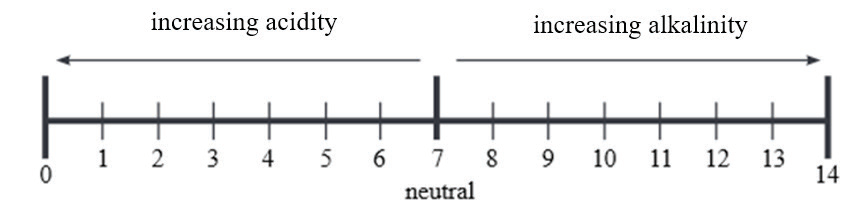

Soil reaction
Soil reaction, also known as soil pH, is a measure of the acidity or alkalinity of the soil. Soil pH ranges from approximately 0 to 14. Soils with pH values less than 7 are said to be acidic soils, those with pH values about 7 are said to be neutral soils and those with pH values above 7 are said to be alkaline soils. Soil pH is normally presented in a pH scale as shown in Figure 2.10. It affects the availability of nutrients to plants and how these nutrients react with each other. The suitable pH range for most plants is between 5.5 and 7.0.

The acidic soils: In acidic soils, availability of nutrients is affected. For example, aluminium and manganese can become more available and more toxic to plants, while calcium, phosphorus, and magnesium are less available. When this happens, some symptoms can be observed in plants. These symptoms include stunted growth, yellowing of leaves, and poor fruit development. To manage acidic soil, materials called lime can be applied to soil to increase soil pH and make it more alkaline.
The alkaline soils: In alkaline soils, the availability of nutrients is also affected. For example, phosphorus and most micronutrients become less available. When this happens, some symptoms can be observed in plants. These symptoms include stunted growth, yellowing leaves, and poor fruit development. To manage alkaline soil, acidifying materials can be added to decrease soil pH.